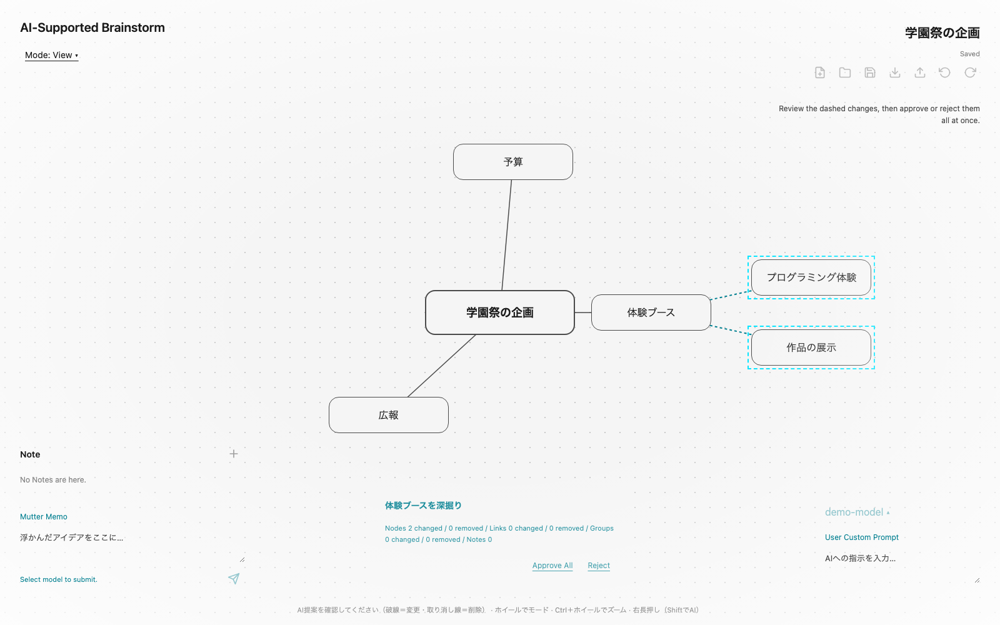

つくった目的
brAIn Storming
アイデア出しで困ったときに、
考えるきっかけを増やしたい
ブレスト ＝ 思いついた案を自由に出し合うこと
宮脇（進行管理） 有働（画面づくり） 文平（内部の処理）
01 / 06
こんな困りごとを想定しました
企画を考えていて、手が止まるとき
案が広がらない
「体験ブースをやりたい」
でも、何をする？
メモがまとまらない
思いつくままに書いたけれど、
どの案がつながる？
思いつくことと、整理することの両方が必要
02 / 06
解決したいこと
次の一案を考える「きっかけ」が必要
違う見方に気づく
自分だけでは出なかった案を
考える手がかりにする
考えのつながりを見る
関連する案をつないで、
全体を見渡せるようにする
AIの提案と、考えを整理する画面を一緒に
03 / 06
役立つ場面 ①
止まったところから、次の案を広げる
1 「体験ブース」を選ぶ
2 AIに案を出してもらう
3 案を見て、具体化する
実際の画面に、説明用のアイデアとAIの提案例を表示
04 / 06

役立つ場面 ②
AIの案は、自分で選んで使う
よい案なら、取り入れる
内容を見てから、
まとめて反映できる
合わなければ、見送れる
提案を断れる。
取り入れたあとも元に戻せる
試しながら、自分の考えに合う形へ整えられる
05 / 06
つくった成果と、これから
考えたことを、次の行動に使える形へ
考えた内容を文章にまとめる
AIに要約を頼み、
企画の説明に使うノートを作れる
保存して、続きから考える
一度に決めきれなくても、
次に開いて見直せる
アイデアを出すところから、整理して残すところまで
今後は実際に使ってもらい、使いやすさや役立ち方を確かめたい
06 / 06
前へ
1 / 6
次へ
発表表示
印刷 / PDF